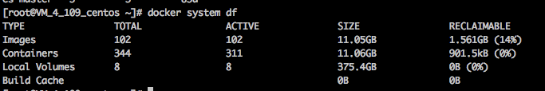
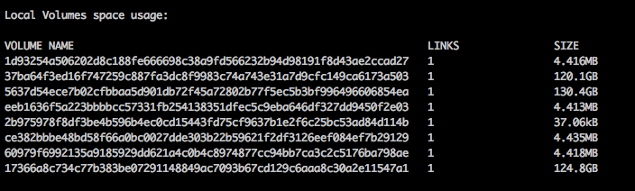
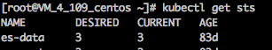

分析docker磁盘占用
有时候磁盘占用高但不知道被什么占用了，我们可以来分析下。
通过 docker system df 看磁盘主要被哪部分占用(镜像、容器、volume)

local volume 占用高
docker system df -v查看哪些 volume 占用高
根据 volume id 反查容器:
docker ps -a --filter volume=5637d54ece7b02cfbbaa5d901db72f45a72802b77f5ec5b3bf996496606854ea
docker inspect一下容器，看被挂载的 volume 的挂载点是哪里，这里假设是/datadocker inspect一下对应的镜像，里面应该也是声明了 volume 挂载点是/data（Dockerfile 声明了挂载点 volume，如果启动容器并没有挂载外部数据卷到声明的挂载点，docker默认会在宿主机创建/var/lib/docker/volumes/<VOLUME-NAME>目录，并将其子目录_data挂载到容器里，而不是直接写到可写层/var/lib/docker/aufs/diff/下面）通过
k8s_es-data_es-data-2_default_428632b6-3bc6-11e9-8843-0a587f8023f1_0可分析这是default命名空间下es-data-2的pod所用到的容器
反查根源

kubectl describe或kubectl get -o yaml看下检查volume挂载点，如果是挂了外部数据卷，看是否是没有挂载到 Dockerfile 声明的 volume 挂载点/data下，如果挂错了就纠正挂载路径